PRODUCT WALKTHROUGH · OCTOBER 2026
ScholarCrew
Your college team. One plan to get in and pay for it.
A crew of AI specialists for high school students and the parents helping them
/week
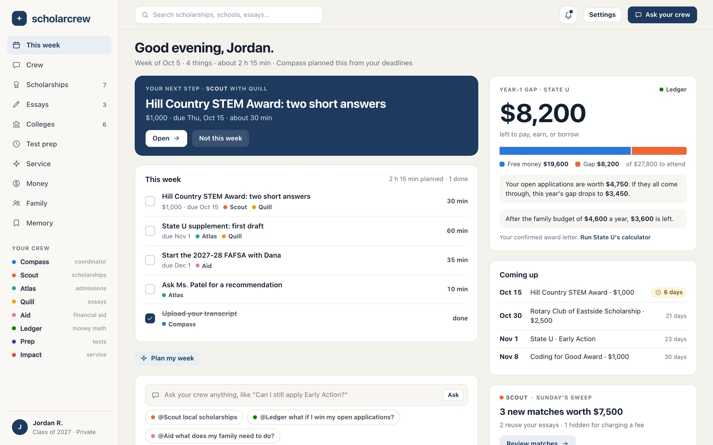
01 / 39
ScholarCrew is a website where a high school student gets a crew of AI specialists that turns 'I want to go to college without drowning in debt' into one weekly plan. This walkthrough covers the problem, how the AI crew works, every workflow in the product with live screenshots, the safety and privacy guardrails, and what's left before launch. Every screenshot comes from the running app with fictional sample data: Jordan R., a junior at Maple High School in Maple County, Texas, and Dana, their parent.THE PROBLEM
Paying for college is a second job
Students and families face it with almost no help.
1
One counselor, hundreds of students
Most students plan alone, and advice arrives after early deadlines have passed.
2
Money hides in five places
Local scholarships, state grants, merit aid, aid forms, and award letters each have their own rules.
3
Listings go stale, and some are scams
Deadlines move, links die, and 'guaranteed money' sites charge fees or sell contact details.
4
Award letters blur aid with debt
Loans and work-study can fill the gap, and a year-1-only grant hides a jump in year 2.
02 / 39
The people we're building for are high school juniors and seniors at schools where one counselor covers hundreds of students, aiming at public and regional universities where merit aid, state grants and local scholarships actually change the price. Middle-income families, too much for Pell and not enough for sticker price, are the likely payers. Low-income and first-generation students get sponsored seats through schools, nonprofits and community foundations. The work is spread across dozens of sites and forms, and the most expensive mistakes are quiet ones: a missed priority date, an essay that never got written, or an award letter that counted a loan as aid.WHAT STUDENTS NEED EVERY WEEK
Four questions, answered every week
Everything the crew does is aimed at shrinking the gap.
SCOUT
Which scholarships should I apply to this week?
Verified listings you qualify for, ranked by dollars per hour of effort.
QUILL
Which essays do I need, and which stories fit?
Prompts matched to stories you've already told, in your own words.
ATLAS
What's due soon?
Admissions, FAFSA and CSS Profile, and scholarship deadlines in one calendar.
LEDGER
How much will each school really cost me?
The gap: cost to attend minus free money, per school, calculated by code.
03 / 39
These four questions come straight from the product vision. Every screen answers at least one of them, and the weekly plan answers all four at once. The gap, meaning cost to attend minus grants and scholarships, is the number the whole crew works to shrink: new scholarships, better essays, the right school, and a successful appeal all show up as a smaller gap.THE CREW
Eight specialists, one answer
Compass leads. Each specialist has a narrow job and only the data it needs.
Compass
COORDINATOR
Plans the week, asks the specialists it needs, and writes the one answer you see.
Scout
SCHOLARSHIPS
Matches with reasons, value per hour, eligibility unknowns, and scam screening.
Atlas
ADMISSIONS
College list balance, requirements, deadlines, test policy, and recommenders.
Quill
ESSAYS
Story Bank, story matching, and questions about your draft. Never writes the essay.
Aid
FINANCIAL AID
FAFSA and CSS checklists, award letters, appeals, and special circumstances.
Ledger
MONEY MATH
Net cost, the gap, offer comparisons, and loan payments, all calculated by code.
Prep
TEST PREP
ACT, SAT and PSAT scores, superscores, and whether a retake pays. Optional.
Impact
SERVICE
Service hours, supervisor confirmation, and 150-character activities. Optional.
04 / 39
Each specialist has its own system prompt built on shared product rules, its own read-only tools, and a data scope. Specialists can't call each other; only Compass consults them, at most four times per request. Ledger is both a specialist and a set of calculator tools, so money answers always come from code. Prep and Impact are optional: a student switches them on from the Crew page, and the sidebar for both the student and their parent shows which ones are active.HOW THE AI WORKS
How one question becomes one answer
Requests run as background jobs, so closing the tab doesn't stop the work.
1
YOU
You ask
In chat, with an @mention, or from a scholarship, college, or essay page.
→
2
CODE
Crisis check
Runs first. A crisis gets reviewed 988 support, with no model call.
→
3
AI
Compass plans
Reads your profile as data. Up to 4 model calls in a 120-second budget.
→
4
AI
Specialists consult
Up to 4 consults. Each has its own prompt and read-only tools.
5
CODE
Calculators
Gap, offers, loan payments, word counts, and dates come from code.
→
6
CODE
Guards
Sources, privacy, and integrity checks. One retry, then strip.
→
7
YOU
One reply
Names who helped, asks at most one question, and lists what it used.
→
8
YOU
You click
Action cards change nothing until you apply them. Twice is a no-op.
AI
A model call
CODE
Plain code, checked by tests
YOU
The student
05 / 39
When a student sends a message, the web app saves it and queues a crew.request job; the page follows the job over server-sent events and shows progress: queued, working, ready. A keyword crisis check runs before anything else and returns a reviewed reply with 988 Lifeline information without calling a model. Compass gets a snapshot of the student's profile and the last 10 messages, wrapped as untrusted data, and may make at most four model calls and four specialist consults within 120 seconds. Numbers come from calculator tools, each with an ID the receipt must cite. Before the reply is saved, guards check that every receipt item is something the run actually saw, that family replies use only shared categories, and that Quill didn't write essay prose. Writes only happen when the student clicks an action card, and applying the same card twice has no extra effect.UNDER THE HOOD
Four kinds of agents
Models explain and coordinate. Code calculates, checks, and decides what's allowed.
AI
Crew
Compass and seven specialists. Narrow prompts, read-only tools, structured results checked against a schema.
CODE
Calculators
Gap, offer comparison, loan payment, word and character counts, days until, and retake value.
CODE
Guards
Crisis, integrity, sources, privacy, and untrusted-content wrapping on every request and reply.
JOBS
Workers
Crew requests, weekly plans, essay reviews, letter parsing, sweeps, reminders, and catalog re-checks.
06 / 39
This split is the core design decision. Anything that must be exactly right, like money math, eligibility, word limits, permissions and deadlines, is plain code that the models call as tools. The models do what they're good at: coordinating, explaining, asking good questions, and reading messy documents. Every model call uses claude-opus-5-5 with server-side fallbacks, an explicit effort level per route, and a cached system prompt. Every call is recorded with its tokens, cache reads, stop reason and cost.PART 2
Every workflow
Sixteen workflows, each with the problem it solves, where AI helps, and why it matters.
07 / 39
The next sixteen slides walk through the product screen by screen, starting the way a new student does. Each slide shows a live screenshot, the problem, how the AI is used (and where it deliberately isn't), why it matters to a family, and the full feature list for that workflow.WORKFLOW 01 ● COMPASS ● SCOUT
Set up in a few minutes
Five short steps build the profile the crew works from.
/onboarding
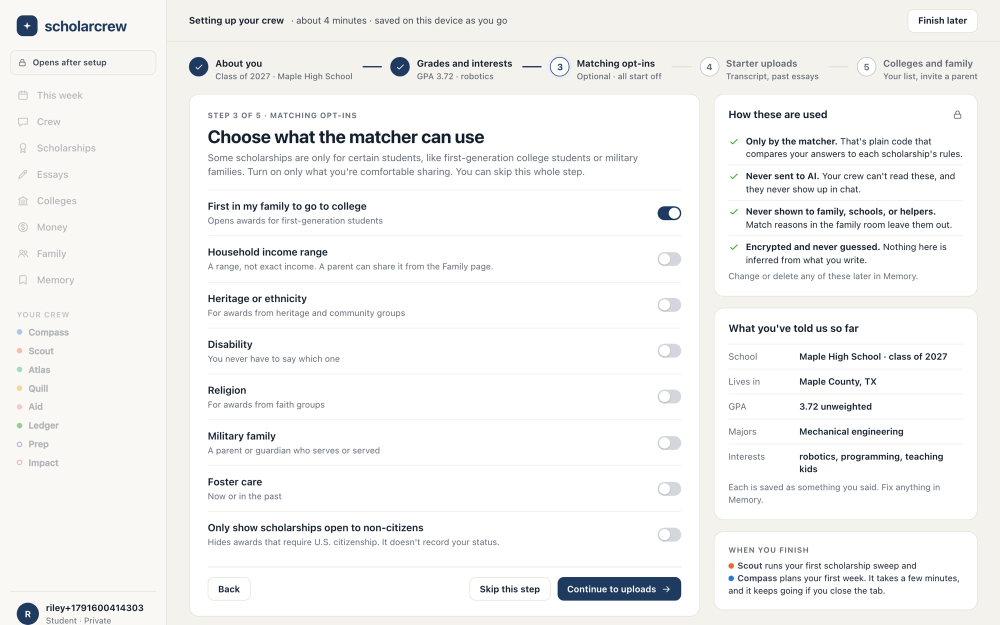
THE PROBLEM
Starting is the hardest part. Students don't know which facts matter, or which are safe to share.
HOW THE AI HELPS
No AI during setup. Finishing it queues Scout's first scholarship sweep and Compass's first weekly plan.
WHY IT MATTERS
Sensitive matching facts start off and are explained before use. Every answer is saved as something you said.
FEATURES
About you
Grades and interests
Matching opt-ins, all off
Starter uploads
Starter college list
Invite a parent
Under-13 age gate
08 / 39
A new student signs in with a one-time email link, no password. Onboarding has five steps: about you (birth year, class year, school, county), grades and interests, matching opt-ins, starter uploads (transcript, past essays, resume, encrypted at rest), and colleges and family (up to 15 starter colleges and an optional parent invite). The opt-in step covers first-generation status, income range, heritage, disability, religion, military family, foster care, and a non-citizen filter. All start off, and the side panel explains they're used only by the matcher, never sent to AI, never shown to family or helpers, and encrypted. Anyone under 13 is stopped at step 1 with a plain explanation. When the student finishes, the This Week screen shows 'your crew is working' until the first sweep and plan arrive.WORKFLOW 02 ● COMPASS ● LEDGER ● SCOUT
One plan for the week
The next step, the week's tasks, the real cost, and what's due.
/week
THE PROBLEM
Deadlines live in many places, and students can't tell which task is worth their limited time.
HOW THE AI HELPS
Compass picks up to 8 tasks from deadlines, matches, and drafts. Code pins them to the week and drops duplicates.
WHY IT MATTERS
One ranked list across admissions and money. The gap card is pure Ledger math, and 'Not this week' defers without losing it.
FEATURES
Next step
Weekly plan
Year-1 gap
Coming up
Sunday sweep
Ask bar
Plan my week
09 / 39
This Week answers all four weekly questions on one screen. The top card is the highest-priority open task with who contributed, minutes, value and due date. The plan lists the week's open and done tasks; checking one marks it done and moves it to the bottom. The gap card shows the year-1 gap for the student's top school, what open applications could cut it to, and the effect of a shared family budget, all computed by Ledger. Coming up shows the next four deadlines across scholarships, applications and aid, with a warning badge inside 14 days. Scout's card summarizes the Sunday sweep: new matches, total value, how many reuse stories, and how many were hidden as scams. 'Plan my week' asks Compass for a fresh plan; it never duplicates a task the student already added from a crew card.WORKFLOW 03 ● COMPASS ● SCOUT ● ATLAS ● QUILL
Ask once. The right specialists answer
Compass coordinates the crew and writes one reply you can act on.
/crew
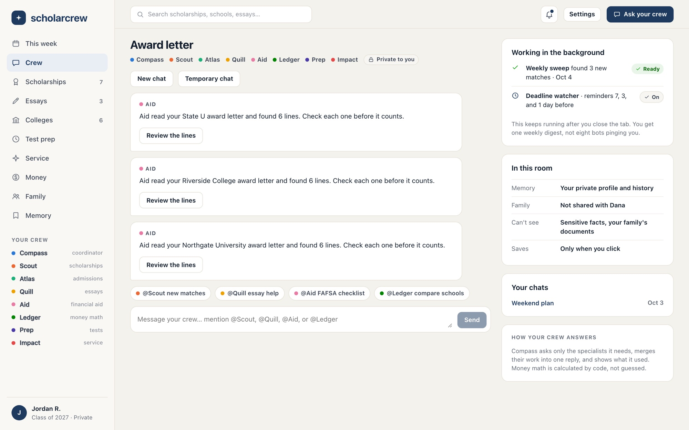
THE PROBLEM
Advice is scattered across counselors, forums, and websites, and none of it knows the student's situation.
HOW THE AI HELPS
Compass reads the profile as data, consults up to four specialists, uses calculators for numbers, and cites what it used.
WHY IT MATTERS
'What the team used' shows sources and verified dates. Action cards change nothing until you click them.
FEATURES
@mentions
Receipts
Action cards
Live progress
Context rooms
Temporary chat
Crisis support
Monthly allowance
10 / 39
Example: 'I have 2 hours this weekend.' Compass consults Atlas (an unstarted Early Action supplement), Scout (matches due within three weeks), and Quill (two prompts that fit a story already drafted), then returns a two-hour plan with an 'Add both to my weekend' card. Each reply names its contributors, gives one answer, and asks at most one question. Context rooms bind a conversation to a scholarship, college or essay so the crew sees that object first. Temporary chats load no memory, save nothing, and are deleted after 24 hours. A model refusal becomes a polite 'I can't help with that one' reply. The Free plan includes 20 crew requests a month and paid plans 300; at the limit, every manual feature keeps working.WORKFLOW 04 ● SCOUT
Scholarships you actually qualify for
Matched by rule, ranked by dollars per hour, screened for scams.
/scholarships
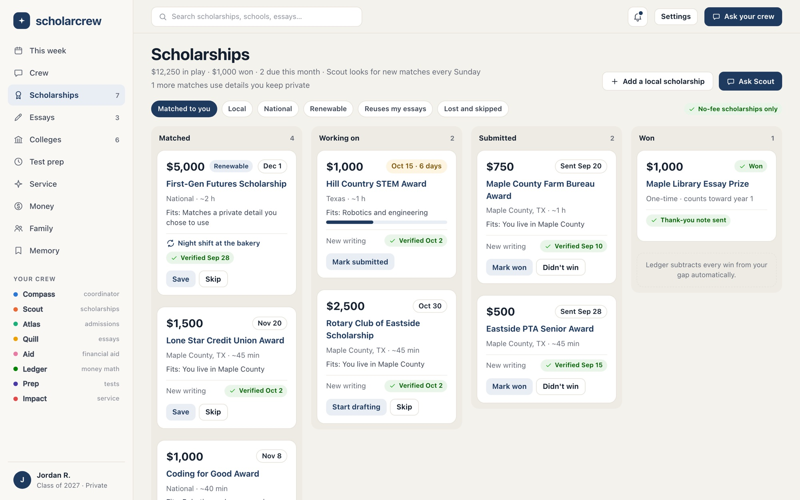
THE PROBLEM
Search sites list thousands of awards. Most don't fit, some are stale, and some are scams.
HOW THE AI HELPS
Matching is code: each listing rule is checked against your profile, with reasons. Scout explains and prioritizes in chat.
WHY IT MATTERS
Ranking by amount × fit ÷ minutes lets a $1,000 local award beat a $10,000 long shot. Scams are hidden, with the reason.
FEATURES
Matched
Working on
Submitted
Won
Value per hour
Scam shield
Add a local scholarship
Sunday sweep
11 / 39
The board has Matched, Working on, Submitted and Won columns, with Lost and Skipped as filters. The eligibility matcher compares profile facts, enabled sensitive facts, and the citizenship filter against each listing's rules and writes human-readable reasons. Matches using private details show only to the student, never in the family room. The scam shield flags listings with fees, guarantees, bank or card requests, or sweepstakes patterns; they stay visible with the reason but never enter the plan. Students can submit a local scholarship by URL; it stays private and labeled unverified until an admin publishes it. Marking an award Won records the amount and renewability, updates Ledger's gap, and adds a thank-you-note task. Renewable awards get yearly renewal reminders.WORKFLOW 05 ● SCOUT ● QUILL ● LEDGER
Every rule, every source, every date
Why you match, what to send, and when it was last checked.
/scholarships/rotary-club-of-eastside
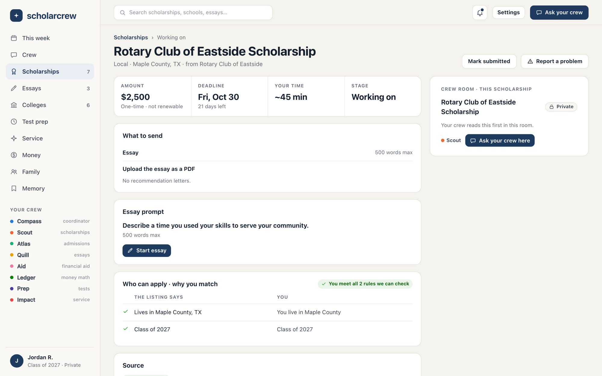
THE PROBLEM
Students waste hours on awards they can't win, or miss a requirement buried in a long page.
HOW THE AI HELPS
Rules come from a source checked by a person. A crew room for this scholarship lets you ask Scout, Quill, or Ledger.
WHY IT MATTERS
Each listing rule sits beside your matching fact. Verified, stale, unverified, and flagged labels pair an icon with words.
FEATURES
Rules vs you
What to send
Essay prompts
Source link
Verified date
Report a problem
Crew room
Start essay
12 / 39
The detail page shows amount and renewability, deadline and days left, estimated time, stage, what to send, each essay prompt with its word limit, and a two-column table: what the listing says and what's true for you. A badge confirms when the student meets every rule the code can check; custom rules say 'only you know this'. The source card links the page the listing was verified against and explains the four labels: Verified matches its source as of the date shown; Stale means it changed or is more than 30 days old and is being re-checked; Unverified means not reviewed yet; Flagged means fee or scam signs. Anyone can report a wrong deadline, dead link, wrong amount, or scam, which creates an admin task. 'Start essay' creates an essay already linked to this prompt.WORKFLOW 06 ● QUILL
Quill coaches. You write every word
Comments quote your own sentences and ask questions.
/essays
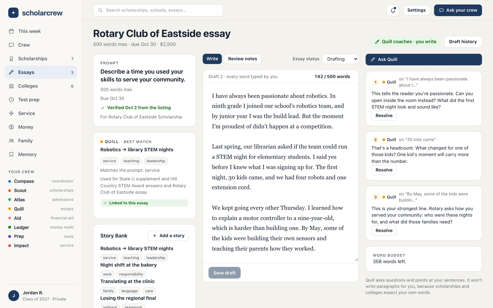
THE PROBLEM
Students need feedback, but tools that write the essay put integrity at risk and erase their voice.
HOW THE AI HELPS
'Ask Quill' returns 1 to 5 comments that quote the draft exactly. A guard blocks runs over 25 words of new prose.
WHY IT MATTERS
Sponsors and colleges read the student's real writing. Every save is a version with authorship and a word count.
FEATURES
Prompt and verified date
Versions
Word and character limits
Quill review
Resolve comments
Draft history
Story match
Crew room
13 / 39
Essay Studio puts the prompt, requirements and verified date on the left, the student's draft in the middle, and Quill's comments on the right. Every save creates a version with the author and word count, and only the student's own saves create versions. Limits warn at 90 percent and over 100 percent. A Quill review runs as a background job at high effort and returns one to five comments; each must quote the student's text exactly, be a question or observation, and be 60 words or fewer. The integrity guard measures the longest run of words that don't appear in the student's own writing. Anything over 25 words gets one corrective turn, then is dropped and logged without the essay text. The story match card suggests the best story from the Story Bank for this prompt.WORKFLOW 07 ● QUILL
Write a story once, use it well
Moments in your own words, matched to new prompts.
/essays/stories
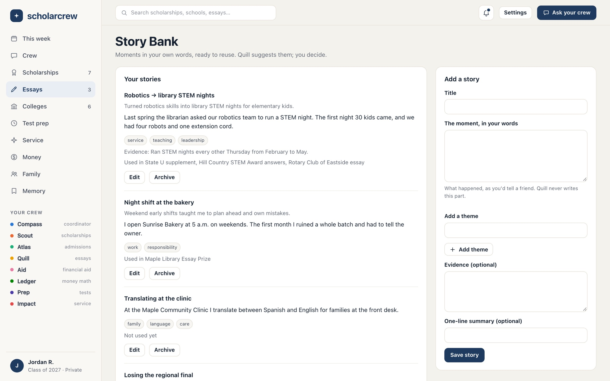
THE PROBLEM
Every application asks a slightly different question, so students start from a blank page each time.
HOW THE AI HELPS
Quill suggests up to 3 stories per prompt, and its story interview asks up to 5 questions. Your answers become the story.
WHY IT MATTERS
Reuse saves hours without recycling essays. The app warns before the same story goes to the same school twice.
FEATURES
Stories in your words
Themes and evidence
Story match
Reuse tracking
Story interview
Paste a past essay
Archive
14 / 39
A story is one moment the student lived, written in their own words, with themes, evidence and an optional one-line summary. The Story Bank shows where each story has already been used. For a new prompt, Quill suggests up to three stories with reasons and prior uses. To capture a new story, the student can start a story interview: Quill asks up to five questions in chat, and the student's answers, not Quill's text, become the story's moment. Students can paste a past essay so Quill asks better questions; it isn't saved as a story. Linking a story to an essay records the use, and the app warns before the same story goes to the same school twice.WORKFLOW 08 ● ATLAS ● LEDGER
Every school, its deadline, its real cost
A balanced list with checklists, policies, and the yearly gap.
/colleges
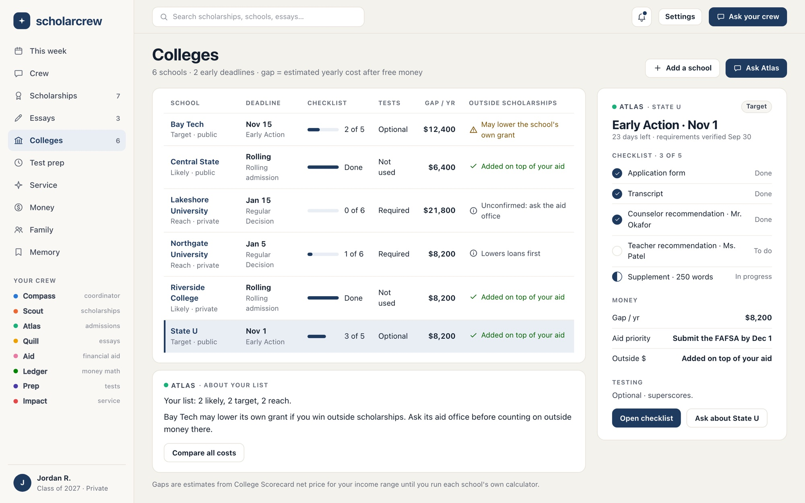
THE PROBLEM
Each college has its own plans, requirements, test policy, and rules for outside scholarships.
HOW THE AI HELPS
Atlas reviews list balance and flags risks, like a school that may cut its own grant if you win outside money.
WHY IT MATTERS
Reach, target, and likely side by side, with each checklist, deadline, and gap, and the next deadline up front.
FEATURES
Fit and plan
Requirements checklist
Deadlines
Test policy
Outside-scholarship policy
Merit tiers
Recommenders
Gap per school
15 / 39
The college list holds up to 25 schools from a catalog seeded with College Scorecard data, each with a fit (reach, target, likely) and plan (Early Decision, Early Action, Restrictive Early Action, Regular, Rolling). Each listed college gets application items from the catalog's requirements: form, transcript, recommendations, supplements, tests, fee or waiver. The table shows deadline, checklist progress, test policy, yearly gap, and the outside-scholarship policy: added on top, reduces loans first, may lower the school's grant, or unconfirmed. The side panel shows the next-deadline school's checklist, money and testing at a glance. Each school's page adds merit tiers with whether the student qualifies, recommender tracking with scoped brag-sheet links, and a crew room bound to that college.WORKFLOW 09 ● LEDGER ● AID
What each college will really cost
The gap: cost to attend minus free money, for every school.
/money
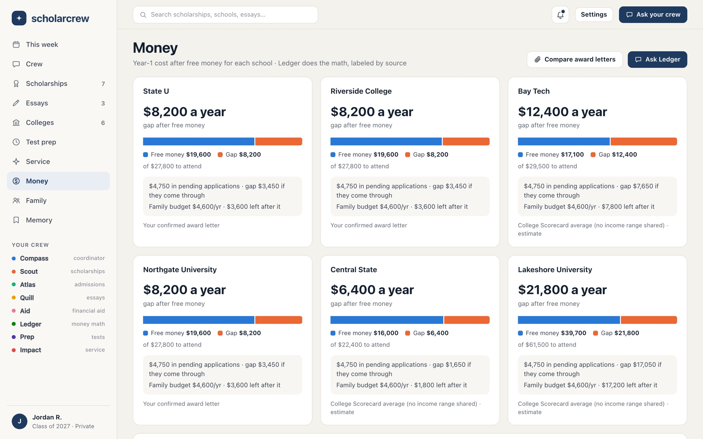
THE PROBLEM
Sticker prices scare families off, and net-price estimates are hard to find and harder to compare.
HOW THE AI HELPS
No AI in the math. Ledger estimates from Scorecard net price for your income range, or your school's own calculator.
WHY IT MATTERS
Free money and the gap side by side, plus how open applications and a family budget would shrink it.
FEATURES
Scorecard estimate
Calculator result
The gap
Pending applications
Family budget
Aid checklists
16 / 39
For each listed college, Ledger estimates year-1 net price from College Scorecard net price for the student's income range, or the overall average when no range is shared, and labels it as an estimate. When the student runs a school's own net price calculator, they enter the result and it replaces the estimate, labeled with its source. The gap is cost to attend minus free money, including any outside scholarships the student has won. Each card shows what pending applications are worth and what the gap would be if they come through, and, when a parent shares a yearly budget, what's left after it. The same page holds the FAFSA and CSS Profile checklists.WORKFLOW 10 ● AID ● LEDGER
Award letters, decoded
Free money separated from work-study and loans, year 1 and over 4 years.
/money/offers
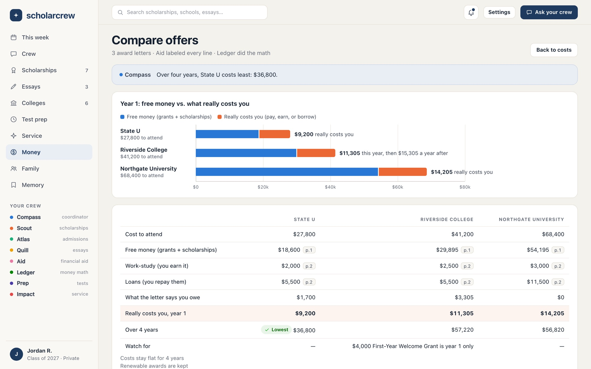
THE PROBLEM
Letters mix grants, work-study, and loans, and a first-year-only grant can hide a big jump in year 2.
HOW THE AI HELPS
Aid reads each PDF and extracts every line with category, amount, page, and quoted text. You confirm, then code does the math.
WHY IT MATTERS
'What the letter says you owe' vs 'what really costs you', 4-year totals, warnings, and an appeal outline.
FEATURES
Upload a letter
Line review
Page citations
Year 1 and 4 years
Watch-for warnings
Loan payments
Appeal outline
17 / 39
In March the student uploads each award letter as a PDF. An offer.parse job has Aid extract every line with its category, amount, renewability, page number and the exact text it came from, at high effort; code drops zero-dollar lines. The student confirms or corrects each line's category before the offer counts. Ledger's comparison separates free money from work-study and loans and shows the difference between what the letter says you owe and what really costs you, for year 1 and over four years. Warnings flag things like a $4,000 grant that's year 1 only. Every number links back to its page. Ledger estimates monthly payments for federal loans on a 10-year plan at the stored rate. 'Draft an appeal outline' gives points, documents to gather, and who to contact; the student writes the letter. In this example State U costs least over four years even though Northgate's aid package is the largest.WORKFLOW 11 ● AID
FAFSA, CSS Profile, and appeals, step by step
Checklists for the award year, with parent steps as family tasks.
/money
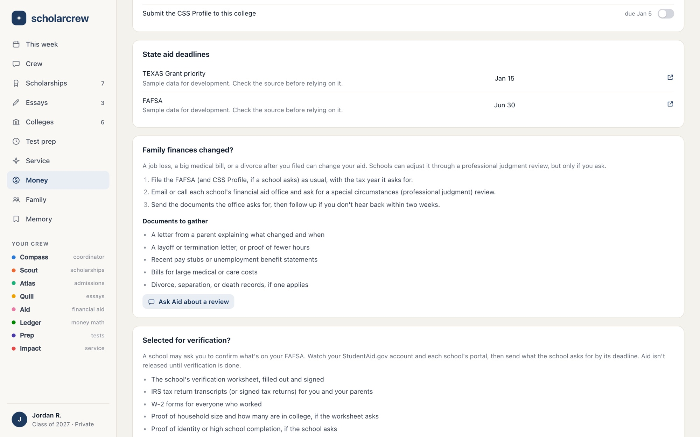
THE PROBLEM
Aid forms have contributors, consent steps, and priority dates, and mistakes cost real money.
HOW THE AI HELPS
Aid explains each step and special-circumstance reviews in chat. It never asks for an FSA ID or submits anything.
WHY IT MATTERS
Student and parent each see their own steps, and state and school priority dates land in Coming up.
FEATURES
FAFSA checklist
CSS Profile when required
State aid deadlines
Family tasks
Special circumstances
Verification documents
18 / 39
The FAFSA checklist covers the current award year: creating a StudentAid.gov account, adding contributors, consent to share federal tax information, submission, reviewing the Submission Summary, and the school list. Parent steps appear as family tasks assigned to that parent. The CSS Profile checklist shows only when a listed college requires it, with that college's priority date. State grant deadlines for the student's state come from aid rules maintained by admins. 'Family finances changed?' explains how to request a professional judgment review and what to gather. 'Selected for verification?' lists the usual documents. Product rule: nothing is ever submitted for the student, and the crew never asks for an FSA ID or any other password.WORKFLOW 12 ● PREP
Is a retake worth it? In dollars
Scores, superscores, and merit tiers, calculated by code.
/prep
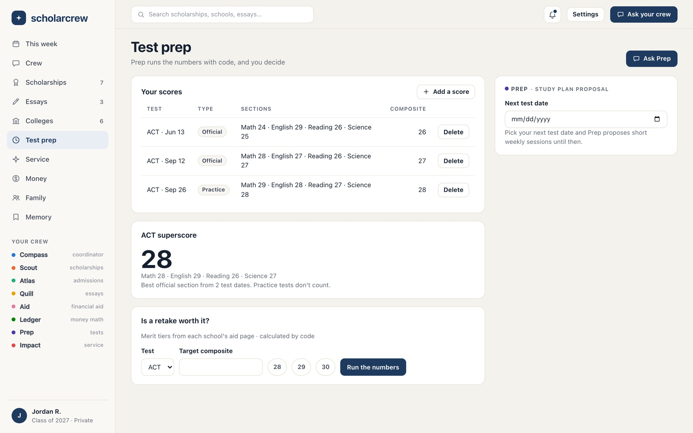
THE PROBLEM
Students retake tests without knowing whether a higher score changes what they'd pay.
HOW THE AI HELPS
Code finds the merit tiers a target score unlocks. Prep explains it in 120 words or fewer, and every dollar must match.
WHY IT MATTERS
A retake decision becomes a money decision, and a study plan adds short sessions up to the test date.
FEATURES
Official and practice scores
Superscore
Retake value
Study plan
Test policy per college
19 / 39
Students record official and practice ACT, SAT and PSAT scores with sections and dates. Superscores are computed per test from official sections only; practice tests never count. 'Is a retake worth it?' takes a target score and runs a retake analysis job: code checks each listed college's automatic merit tiers and computes the four-year dollar difference the target would unlock. Prep then explains those numbers in 120 words or fewer with up to three study-session cards. If any dollar figure doesn't match the analysis, Prep gets one corrective turn and then a template is used instead. The study plan proposes short weekly sessions until the next test date, and accepting adds them to the weekly plan.WORKFLOW 13 ● IMPACT
Service hours that count
Logged, confirmed by a supervisor, and ready for applications.
/impact
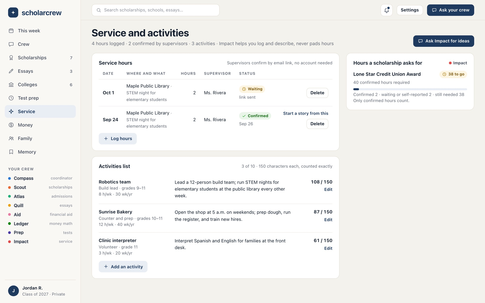
THE PROBLEM
Scholarships ask for verified hours and tight 150-character activity descriptions.
HOW THE AI HELPS
Impact suggests local service that fits your interests and gaps, and turns reflections into story drafts. It never pads hours.
WHY IT MATTERS
Supervisors confirm with an email link, no account needed. Progress counts only confirmed hours toward each requirement.
FEATURES
Service log
Supervisor confirmation
Requirement progress
Activities list
150 characters, counted exactly
Reflection to story
20 / 39
Students log hours with organization, date, activity, supervisor and a short reflection. Asking a supervisor to confirm sends an email link that expires in 14 days; the supervisor confirms or declines without an account and can leave a note. Scholarships that require service hours show confirmed and total hours against the requirement, like 40 hours for the Lone Star Credit Union Award. The activities list holds up to 10 activities with role, organization, hours per week, weeks per year, grades, and a description counted exactly to 150 characters, including emoji. A reflection can start a Story Bank draft the student edits and saves. Impact's service ideas never claim an external listing is verified.WORKFLOW 14 ● COMPASS
You control what the crew remembers
Every fact shows where it came from and who can use it.
/memory
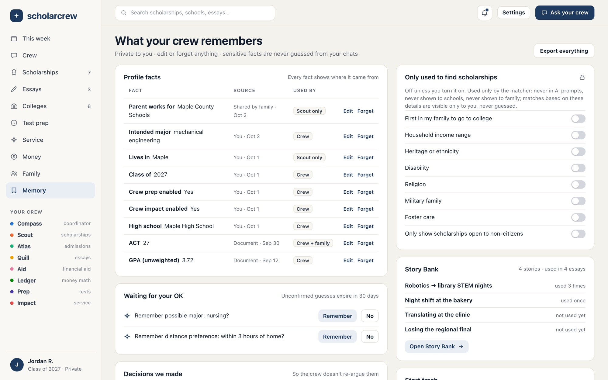
THE PROBLEM
AI tools quietly remember and infer things about people. Students deserve to see and control that.
HOW THE AI HELPS
Guesses are saved as candidates you confirm, and they expire in 30 days. Sensitive facts are never inferred or sent to AI.
WHY IT MATTERS
Edit or forget anything and the crew stops seeing it immediately. Export it all, or chat without saving anything.
FEATURES
Facts with sources
Who can use each fact
Candidates
Decisions log
Sensitive opt-ins
Export
New season
Delete account
21 / 39
Every fact shows its value, source, date, and visibility: crew, crew and family, Scout only (used for matching only), or private. Editing supersedes the old fact; forgetting deletes it and anything derived from it. Facts the crew infers are saved as candidates: 'Remember possible major: nursing?' with Remember and No buttons. Candidates are never used as facts and expire after 30 days. The decisions log records choices the student made in chat, like 'Skip Early Decision at Northgate', so the crew doesn't re-argue them. Sensitive opt-ins are encrypted with AES-256-GCM and read only by the matcher and the cost estimate. Start fresh offers a new chat, a temporary chat, a new season that archives admissions and keeps stories and essays, and account deletion. Export produces JSON and Markdown within about 10 minutes.WORKFLOW 15 ● COMPASS ● AID ● LEDGER
Parents help. Students decide what's shared
Per-category sharing, a shared family room, and private parent space.
/family
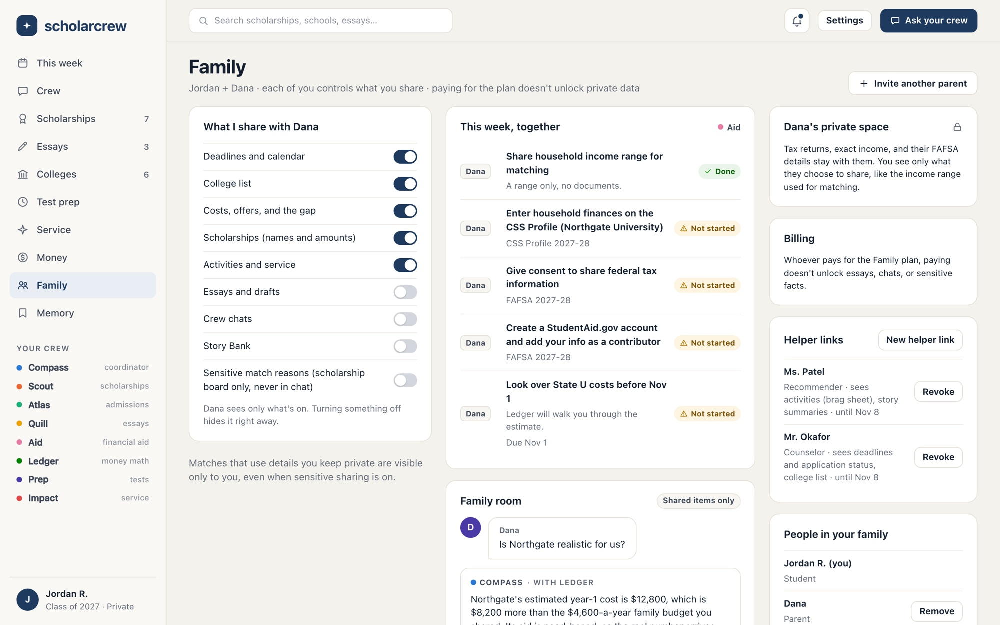
THE PROBLEM
Parents need deadlines and costs, but paying for a plan shouldn't unlock a teenager's essays or chats.
HOW THE AI HELPS
In the family room the crew sees only what both sides shared, and a privacy guard checks every reply before it's saved.
WHY IT MATTERS
Students switch each category on or off and access ends immediately. FAFSA steps become parent tasks.
FEATURES
Invite a parent
Nine sharing categories
Family room
Parent private space
Shared income range
Family tasks
Family budget
22 / 39
A student invites a parent by email; the link works once and expires in 7 days, and a family has one student and up to four parents. Sharing has nine categories: deadlines, colleges, costs, scholarships, activities, essays, chats, stories, and sensitive match reasons. The first five are on by default, and turning one off hides it on the parent's next request. A parent's own facts, like exact income and tax documents, stay in their private space. A parent can share an income range to the student's matching, but it arrives switched off until the student turns it on, and it never overwrites the student's own value. The family room is a shared crew chat that answers 'using shared numbers only'. FAFSA and CSS contributor steps and budget input appear as tasks assigned to a person. A member can leave, and a student can remove a parent; access ends immediately.WORKFLOW 16 ● ATLAS ● IMPACT
Helper links for recommenders and counselors
A read-only brag sheet, scoped and expiring.
/h/…
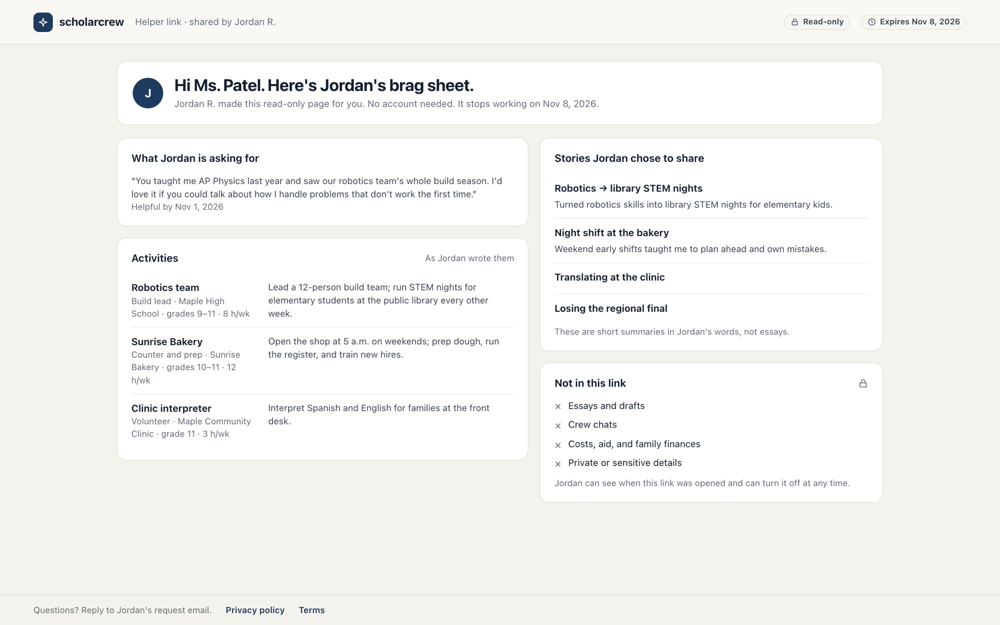
THE PROBLEM
Teachers write recommendations from memory, and students email activity lists as attachments.
HOW THE AI HELPS
No AI here. The student picks what it shows. It never includes essays, chats, costs, or sensitive facts.
WHY IT MATTERS
Links expire within 90 days and revoke instantly, and the student can see when one was opened.
FEATURES
Recommender brag sheet
Counselor view
Chosen categories
Request note and due date
Expiry
Revoke
Hours confirmation
23 / 39
From the Family page or a college's recommender section, a student creates a read-only link for a recommender, counselor or mentor. They choose categories from deadlines, colleges, activities, stories and scholarships; essays, chats, costs and sensitive facts are never available to helpers. A recommender link shows the student's activities in their own words, the titles and summaries of non-archived stories, and the request: Jordan's note to Ms. Patel and when the letter would help, taken from the earliest related deadline. A counselor link shows deadlines, the college list and application item status. Links expire within 90 days, revoking makes them return 404 immediately, and every use is recorded in the audit log. Supervisors confirm service hours through the same kind of no-account link.BACKGROUND WORK
The crew keeps working when you don't
Scheduled jobs run in each student's time zone and retry on failure.
EVERY SUNDAY
Scholarship sweep
Scout re-runs matching for every active student and notifies them about new matches.
EVERY HOUR
Deadline reminders
Reminders 7, 3, and 1 day before each deadline, sent once. Optional 1-day text messages.
YOUR CHOSEN DAY
Weekly digest
One email with the plan, deadlines, and new matches. Skipped when nothing is new.
EVERY NIGHT
Catalog re-check
Listings older than 30 days or due within 45 are re-fetched. Changes mark them stale.
ON DEMAND
Crew jobs
Chat replies, essay reviews, letter parsing, and exports run with retries and live progress.
24 / 39
Work that shouldn't block a page runs as a pg-boss job in Postgres. The web app only sends jobs; the worker runs the handlers and cron schedules. Sunday at 14:00 UTC, the sweep fans out one job per active student. Every hour, reminders go out 7, 3 and 1 day before deadlines the student is working on, deduplicated per item and offset, and the digest goes to students whose chosen day and hour match their time zone. Every night, listings verified more than 30 days ago, or with a deadline within 45 days, are re-fetched through the Batch API; changed content creates a review task and marks the listing stale. Job payloads carry IDs only, so essay text, sensitive facts and documents never sit in the job table. Notifications never include sensitive facts or essay text, and quiet hours hold texts until morning.MOBILE
Built for the phone in their pocket
Every screen works down to 320 pixels wide, with a bottom tab bar and a More menu.
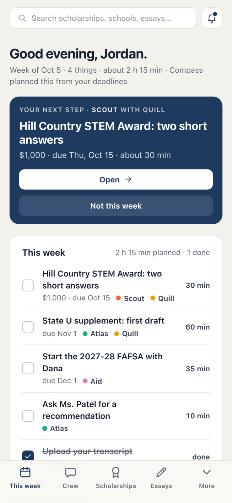
This week
Next step, plan, gap, and deadlines in one scroll.
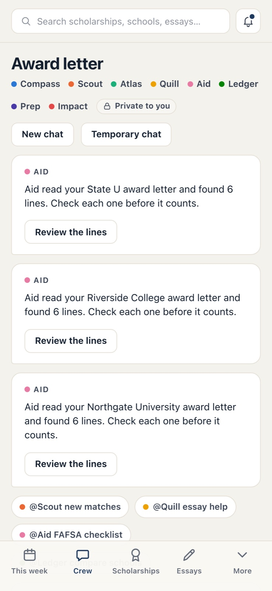
Crew chat
Replies with receipts and one-tap action cards.
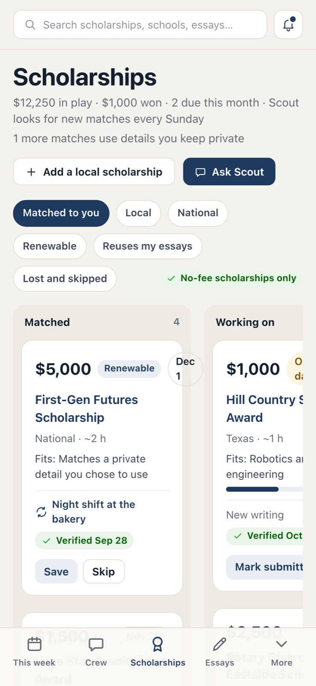
Scholarships
The board as stacked columns, with every action.
25 / 39
Students live on their phones, so the whole app is responsive. At phone width the sidebar becomes a bottom tab bar with This week, Crew, Scholarships, Essays and a More menu for everything else, and the top bar shrinks to search and notifications. Every page was checked at 320, 390, 768 and 1024 pixels wide for sideways scrolling and clipped content. Tables scroll inside their own regions, and long chips and badges wrap.PUBLIC SITE
Free tools, no account needed
Useful on day one, and an honest way to meet the crew.
/
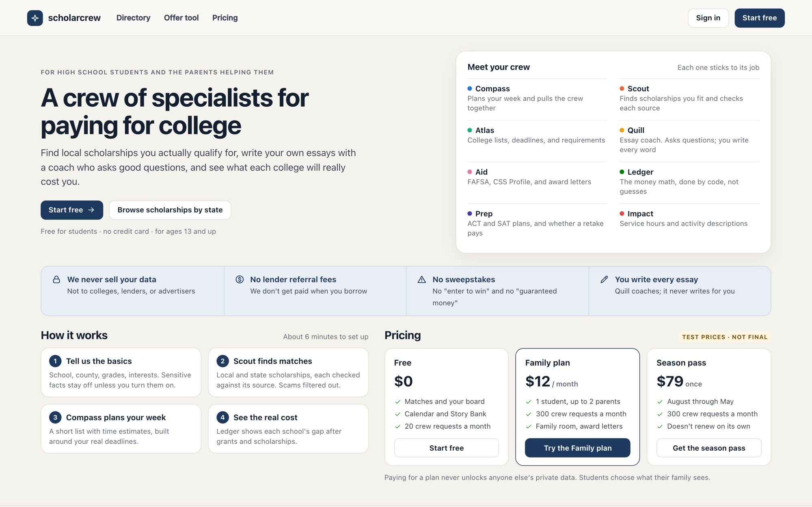
Landing page
The crew, the no-selling and no-referral-fee rules, how it works, and pricing.
/directory/tx
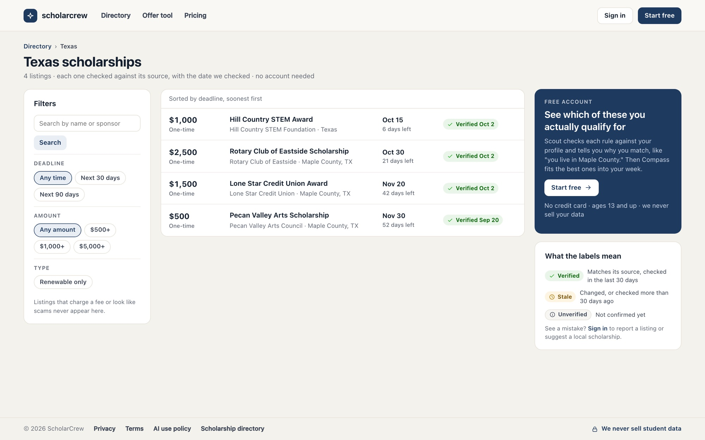
Scholarship directory
Server-rendered pages per state, with verified dates, filters, and labels.
/offer-tool
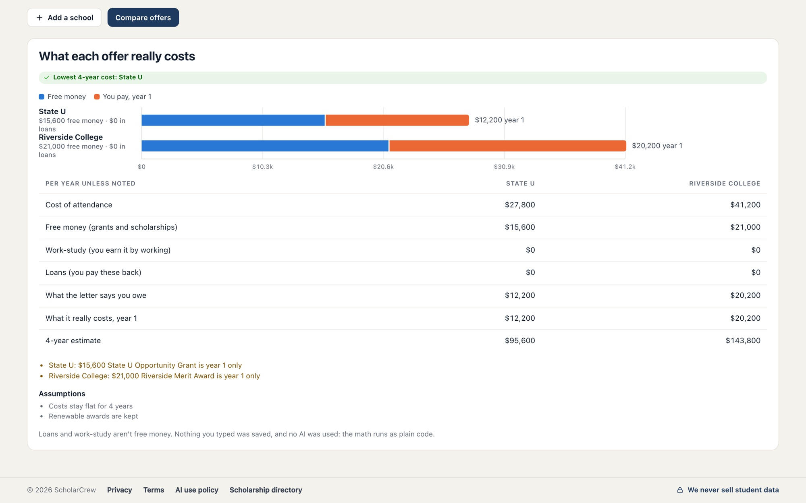
Award-letter calculator
Compare letters with plain code. Nothing is saved and no AI is used.
26 / 39
Signed-out visitors get real value. The landing page explains the crew, the trust rules and test pricing. The scholarship directory has server-rendered pages per state and per scholarship, each showing when it was verified, with filters for deadline, amount and renewability; listings that charge a fee or look like scams never appear. The public offer tool lets anyone type award-letter lines and see year-1 and four-year cost with warnings like 'year 1 only'. It stores nothing and uses no AI. Sign-in uses a one-time email link and accounts require age 13 or older.ADMIN CONSOLE ● SCOUT
Keeping every listing true
Research finds candidates, code checks them, and a person decides.
/admin/tasks
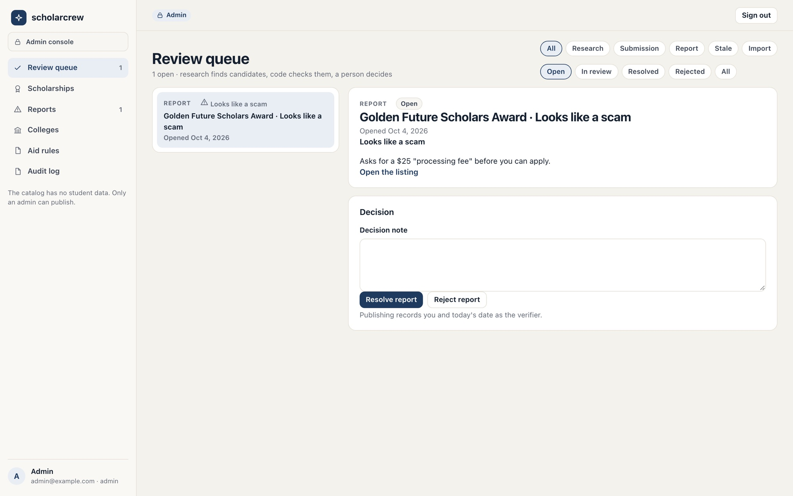
THE PROBLEM
Scholarship data rots: deadlines move, pages vanish, and scams copy real listings.
HOW THE AI HELPS
A research agent uses web search and fetch to find local pages. Extraction turns each into a draft with a quote per field.
WHY IT MATTERS
Code checks quotes, deadlines, amounts, and scam rules. Only an admin publishes, and nightly re-checks catch changes.
FEATURES
Research
Extraction with quotes
Verification rules
Review queue
Reports
Nightly re-check
Scorecard import
Aid rules
Audit log
27 / 39
The catalog is shared, non-personal data, and its rule is 'no fact without a source'. Research runs a model loop with web search and web fetch, limited to allowed domains, and looks for local foundations, civic clubs, credit unions, employers and school districts while skipping sweepstakes and paid matching services. Each candidate page is fetched safely (public hosts only, 2 MB cap) and extracted at low effort into a structured draft where every filled field needs the exact sentence that supports it. Verification rules then check that quotes appear on the page, deadlines aren't past, amounts are sane, and no scam rules match. Admins compare fields with quotes in the review queue and publish or reject. Student submissions and reports land in the same queue, and report titles name the listing. Admins also import College Scorecard data, maintain loan rates and aid deadlines, and search the audit log.ALSO INCLUDED
Everything else in the box
The pieces that make the product complete.
1
Browser extension
Proposes answers from your profile on scholarship forms. You review each one; it never clicks submit.
2
Notifications
In-app bell, weekly digest, 7-3-1 day reminders, optional texts, and quiet hours.
3
Settings and data
Name and time zone, documents, export everything, sign out everywhere, and delete account.
4
Billing
Free, Family, and Season pass through Stripe, plus sponsor codes from schools and nonprofits.
5
Sign-in
One-time email links, 30-day sessions, an age gate, and origin checks on every change.
6
Accessibility
Every status pairs an icon with words, never color alone, and controls are labeled.
28 / 39
The Chrome extension detects standard form fields on a scholarship application, proposes values from the student's profile and activities, and fills only what the student approves. It skips parent fields, essay prompts and disabled fields, preserves anything edited since the review opened, and never submits. It can also save the current page to Scout as a local scholarship. Settings covers notification preferences, plan and crew-request usage, browser connections, documents, export and account deletion. Deleting an account signs out every device and hides data immediately, with permanent deletion within 7 days. Billing runs through Stripe Checkout and the customer portal.PART 3
Trust and safety
Where AI is used, where it isn't, and the guardrails around both.
29 / 39
Families are trusting the product with a teenager's data, essays and money decisions. This section explains exactly where the models are involved, the code that decides everything that has to be exact, and the checks that run on every reply.THE DIVISION OF LABOR
AI helps. Code decides
Models explain, coordinate, and read documents. Anything that must be exact is code.
AI
Where AI helps
Compass coordinates the crew and writes each answer
Specialists explain, prioritize, and propose next steps
Quill asks questions about your draft and matches stories
Aid reads award letters into labeled, cited lines
Aid outlines appeals and Prep explains retake math
The catalog agent researches and extracts listings
CODE
Where code decides
Eligibility matching and value-per-hour ranking
Every dollar: the gap, offers, loans, and retake value
Word and character counts, deadlines, and reminders
Scam and verification rules on every listing
Who can see what: sharing, helpers, and family
Writes happen only when you click an action card
30 / 39
This is product rule 4, 'money math is code', generalized. When the crew mentions a number, it comes from a calculator tool call with an ID that the receipt must cite, and the sources guard rejects receipts that point at anything the run didn't actually see. Sensitive facts never reach a model at all: the matcher and the income-based cost estimate are the only readers. Models only get read-only tools, so even a successful prompt injection inside a scholarship page or a PDF can't change data. Every write goes through an action card the student clicks.GUARDRAILS
Five guards on every reply
Checks run in code before anything is saved or shown.
CODE
Crisis
Self-harm language gets reviewed 988 and 911 information before any model runs.
CODE
Integrity
Quill output with more than 25 words of new prose is blocked, retried once, then dropped.
CODE
Sources
Every receipt item must be a fact, record, listing, or calculation the run actually saw.
CODE
Privacy
Family-room replies may use only the categories both sides shared.
CODE
Untrusted content
Pages, letters, drafts, and history go to the model as data, never as instructions.
AI
Bounded runs
At most 4 Compass calls, 4 consults, and 120 seconds. Refusals get a polite reply.
31 / 39
The crisis check runs on the student's message before rate limits or model calls, and avoids hyperbole like 'this essay is killing me'. The integrity guard compares Quill's text against the student's own stories and drafts using word trigrams. The sources guard requires catalog items to copy the exact source URL and verified date. When a guard fails, the model gets one corrective turn; anything still failing is stripped and the reply is marked partial. Every model call has explicit effort, a cached system prompt, server-side fallbacks, a 120-second timeout and one retry. Refusals are handled before content is read. A scripted evaluation suite checks for ghostwriting, missing sources, cross-family leakage and wrong math.PRODUCT RULES
Eight rules every feature follows
Written into the spec, enforced in code, and checked by tests.
1
The student writes every essay
Quill comments and asks; it never produces submittable prose.
2
Nothing is submitted for you
No portal logins, no FSA ID, no passwords for other sites.
3
No fact without a source
Listings, deadlines, and amounts carry a source and verified date.
4
Money math is code
Calculators compute; the model explains.
5
Sensitive facts stay sealed
Opt-in, encrypted, read only by code, never sent to a model.
6
Sharing is per category
Paying for a plan doesn't unlock anyone's data.
7
No selling, no lead fees
No data sales, lender referral fees, sweepstakes, or guarantees.
8
13 and older
Students under 13 can't sign up.
32 / 39
These eight rules come from the feature spec, and every feature inherits them. They're also the core of the trust message on the landing page: we never sell your data, we take no lender referral fees, we run no sweepstakes, and your essays are yours. Each rule maps to concrete code: the integrity guard, the absence of any submit path, the sources guard and verified dates, calculator tools, encrypted sensitive facts read only by the matcher, per-category share grants checked by every service, and the age gate.PRIVACY AND SECURITY
Private by design
Built for a teenager's data from the first line of code.
1
Authorization everywhere
Every service checks ownership or a share grant. Cross-user and cross-family tests pass.
2
Encryption
Sensitive facts and uploaded files are encrypted with AES-256-GCM. Keys never reach logs.
3
Audit trail
Sign-ins, sharing changes, exports, deletions, admin edits, and helper-link use.
4
No trackers
No third-party analytics or ad SDKs on any signed-in page.
5
Rate limits
Per-user and per-IP limits on sign-in, crew requests, uploads, and public tools.
6
Short retention
Temporary chats last 24 hours. Deleted accounts are purged within 7 days.
33 / 39
Every service function takes an actor and checks ownership or a share grant before reading or writing, and isolation tests verify that one student can't reach another's essays, documents, offers, jobs, conversations, action cards or helper links. Every cookie-authenticated change checks the Origin header. Sessions are httpOnly, Secure and SameSite=Lax cookies. Sign-in links work once and expire in 15 minutes. Helper and invite links are never sent to other sites because of a same-origin referrer policy. Exports expire after 24 hours, and magic links are purged after a day.PART 4
Why it works
The value for families, pricing, and how the product was verified.
34 / 39
The last section covers why families will use it, how it's priced, how it was tested, and what's left before launch.WHY IT'S USEFUL
From scattered tabs to one plan
What changes for a family that uses ScholarCrew.
WITHOUT
WITH SCHOLARCREW
✕
Search sites full of long shots and scams
✓
Verified matches ranked by value per hour, scams hidden
✕
A blank page for every essay prompt
✓
Stories reused, with feedback that keeps your voice
✕
Award letters that blur loans and grants
✓
Every line decoded, compared for year 1 and 4 years
✕
Deadlines spread across five websites
✓
One weekly plan, one calendar, timely reminders
✕
Parents asking for passwords and drafts
✓
Sharing the student controls, category by category
35 / 39
The north star is weekly active students who submit at least one matched application on time with their own writing. The lagging outcome is verified aid won per student, from award letters and the Won outcomes students record. The product is designed so every saved hour and every dollar can be traced back: matches ranked by value per hour, story reuse, offer comparisons that catch year-1-only grants, and appeals that start from the actual letter.PRICING
Free to start, one price for the family
Test prices, not final. Sponsor codes cover students through schools and nonprofits.
Free
$0
✓
Matches and your board
✓
Calendar and Story Bank
✓
20 crew requests a month
Start free
Family plan
$12
/ month
✓
1 student, up to 2 parents
✓
300 crew requests a month
✓
Family room and award letters
Try the Family plan
Season pass
$79
once
✓
August through May
✓
Same as the Family plan
✓
Doesn't renew on its own
Get the season pass
36 / 39
Every manual feature works on the Free plan; the allowance only limits crew requests that call a model. The Family plan is a Stripe subscription covering one student and two parents. The Season pass is a one-time payment for August through May with the same limits. Sponsored seats let schools, nonprofits and community foundations give the Family plan to students who can't pay. Paying never grants access to anyone's data. These are test prices, not final.BUILT AND VERIFIED
Tested like it matters
Verified on October 9, 2026, against the running app with fictional data.
2,020
automated tests passing across 12 packages
23
browser flows passing in Chromium, end to end
49
live click-through flows as student, parent, admin, and visitor
19
design mockups compared screen by screen
152
page checks: 38 pages at 4 screen widths
0
lint or type errors across 14 workspace tasks
Next.js 15 · PostgreSQL 16 · pg-boss worker · Claude (claude-opus-5-5) · Chrome extension
37 / 39
The monorepo has a Next.js web app, a background worker, a Chrome Manifest V3 extension and shared TypeScript packages for the domain, database, engines, jobs, core services, agents and catalog. Verification covered unit and integration tests against a real Postgres database, Playwright browser flows including security isolation and CSRF checks, a production audit mode, and scripted model evaluations. For this walkthrough every screen was compared with the 19 design mockups and exercised live in 49 flows, and every page was checked at four widths.BEFORE LAUNCH
What's left before launch
The product is complete. These checks need live accounts.
1
Live AI safety evals
Run the evaluation suite against Claude with a real API key.
2
Payments
Stripe sandbox checkout and webhook delivery.
3
Email and texts
Resend delivery and Twilio SMS with provider accounts.
4
Deployment
Production hosting, streaming through the proxy, and live portal checks.
38 / 39
Locally, the crew runs on a scripted model so development and CI need no API key and cost nothing. The real safety evaluations, covering ghostwriting, sources, cross-family leakage and math, need an Anthropic key and are the first release gate. Payments, email and SMS adapters are built and tested with fakes and need their provider accounts. No production deployment has been done yet; streaming must be checked behind the production proxy, and autofill on account-gated application portals needs a live check.SCHOLARCREW
Thanks.
One plan to get in and pay for it, with a crew that never writes your essay or sells your data.
Start free →
ScholarCrew is a working name. All people, schools, scholarships, amounts, and prices shown are fictional sample data.
39 / 39
Thank you. The product is ready to try locally with the seeded accounts for Jordan, Dana and the admin. The next steps are the live safety evaluations, provider setup for payments, email and texts, and a production deployment.